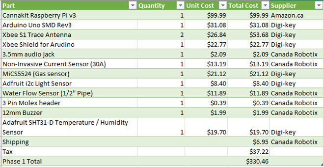
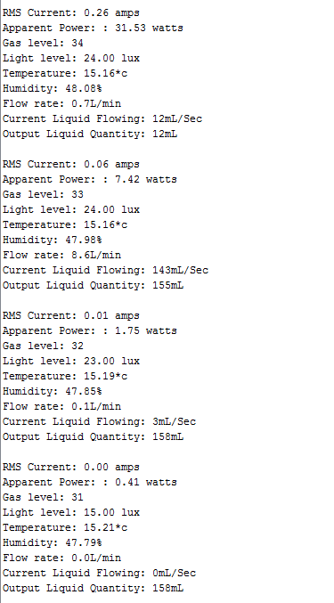

My Active House project is a complete home monitoring system.
The idea is that you would have one Sensor Hub in each room of your home to collect data
You would have one Raspberry Pi based base station which all of the sensor hubs send their data wirelessly to.
The base station then sends the received sensor data to the database for use in my app.
Parts:
Here is a list of all the parts and aproximate costs for one Raspberry Pi base station and one Sensor Hub:

This list does not include parts from the Humber electronics parts kit. The parts you will need from the kit are:
220ohm Resistor
33ohm Resistor
2x 10Kohm Resistors
LED
50uf Capacitor
Single Core Wire
You will also need to print out the Acrylic case which can be found here and the 2 PCBs which can be found here and here.
Time Commitment
While it took me probably upwards of 30 hours to design the project and the circuit boards, put it all together, and code it, I'd expect it to only take around 5 hours to build the project again.
PCB/Soldering
The first board you will need to solder is the XBee Breakout board. You only need to solder the 3.3v, GND, RX and TX pins as seen in this diagram:
Then you will need to solder the Arduino Shield which includes all of the sensors and connections. You can view the board and schematic files for this board here which will explain where all of the components and connections go. Beware, some of the solder pads on the Arduin Shield are very small and you will need a very steady hand to solder them. Below are a collection of images which will help you understand where everything goes and how it is connected:
Mechanical Assembly
First, you will need to unbox your Raspberry Pi and set it up. You can view my unboxing video here. After that, connect the wires from the Xbee breakout board to the appropriate GPIO pins.
Next you will need to build your acrylic case for your Arduino. Glue the all but the back side together and glue the ports for the current and liquid sensors onto the rear panel of the case.
Code
You can view the Arduino Code here to read all of the sensor data and output it to Serial. You will also need to include the Libraries folder.
Due to a limitation with the Arduino Uno and the Arduino XBee Shield, you cannot upload code to the Arduino while the XBee shield is plugged in, so it needs to be removed from the arduino board when uploading. Alternativly, you could flash the Arduino Uno's bootloader with the Duemilanove which supports uploading code over XBee and send the code to the Arduino wirelessly from the Raspberry Pi. You can read about how to flash the bootloader here
Power Up
The output from the Arduino is below. You can also view my power up in my Build Video.

Testing
In all of the testing I hae done so far, everything works as expected. I've checked the read values from the temperature, humidity, light, and gas sensors and they all seem to be accurate. I have noth been able to find a 1/2" hose to connect to my liquid flow sensor so I've been unable to calibrate it, but tripping it by blowing air trough it works as expected. I've tested the current sensor with a few different appliances and its's read values seem to be close to the expected range, howeer I still need to completely calibrate it with an clampmeter. The buzzer and LED can both be toggled from within the code.
The project is nearly complete. All of the hardware is put together and complete. I have made the changes to the rear panel of the acrylic case where the etching was backwards and I will be printing this with Vlad soon.
The code is working for all components but I still need to program the Raspberry Pi to receive the data from the sensor box over the Xbees. Ideally I'd get it sending the data to the server done as well in preperation for next semester.
The parts included in our original budget were completely different than the ones that we ended up purchasing and as such the budget has gone up. I still have to update the budget with the exact numbers but I'd say around $350.
Week 11 Progress Report
I put a lot of time into the project last week leading up to the open house and was able to get it to a near complete state. I received the PCBs back from Vlad later last Tuesday so I spent the next couple days soldering everything. It was one of the most challenging things I've ever had to solder, the pads had to be very small to have enough room to route everything on one side of the board. After many hours of precise soldering I was able to get it put together. I also got an acrylic box built in Corel Draw and printed in the prototype lab. I messed up the back side and put the etching on backwards so I will need to reprint that one side, but other than that it's looking good. I got all of the code working together in one Arduino project where it just outputs to the console. My next steps are getting it to send the data over the XBees to the Raspberry Pi. My project was a little ahead of that of my group members so I feel like I stood out and got good marks in the open house.
Week 10 Progress Report
The project is coming along well. Last week I was able to get the liquid flow sensor code working. This past weekend I got a short power extension cord and stripped the outter sleeving off to be able to loop the current sensor around the live wire for testing. I have been able to get an output from it now that changes as more things are plugged in. I have the correct formulas and it appears to be accurate but I still need to use an ammeter to calibrate it.
I spent the last 2 days learning how to use Eagle and designing a PCB for the Arduino Shield. It was challenging to fit all of the sensors, headers, and other components on the board and have them all routed correctly but after a few trips to Vlad for pointers I was able to get it designed and sent off to Vlad for printing. I decided to go for an 'L' shaped board as to not cover the XBee which might reduce range. You can view the board, schematic and gerber files at https://github.com/irwintr/irwintr.github.io/tree/master/ArdunioShield
As I sent the PCB to Vlad yesterday, I am hoping it will be printed by Friday so I can get my parts all soldered on before the open house on Saturday. I had him print 3, one for me and each of my group members. Today or tomorrow I am going to continue working on the acrylic case for the Arduino, hopefully having that printed for Friday as well. As for the code, I have all of the sensors working and outputting to the serial, I just need to formati it a bit better and get the code for the Raspberry Pi working to send the data to the remote database.
I have received my Raspberry Pi in the mail and have put it together. I sent the Sensor Hat board files to Vlad to print but have not received it back yet.
I have spend a considerable amount of time looking through all the options for different sensors and circut components online and I will hopefully be ready to place my order by the end of the day.
While I don't have an exact total yet, I'm going to estimate that we will be over budget by about $50-$100. We have had several changes to our materials list since creating the budget including moving from the Ardunio Nano to the Uno and using XBee as the communications method instead of WiFi. We have also included several other sensors including a Hall Effect sensor for measuring power usage and a liquid flow sensor.
As I hope to have the parts ordered by EOD, we are on scedule according to our project scedule. I have at least one board schematic (XBee breakout board) that I will be sending to the Prototype lab to print. Assuming I receive all the parts this week, I should have time to assemble and solder this weekend.